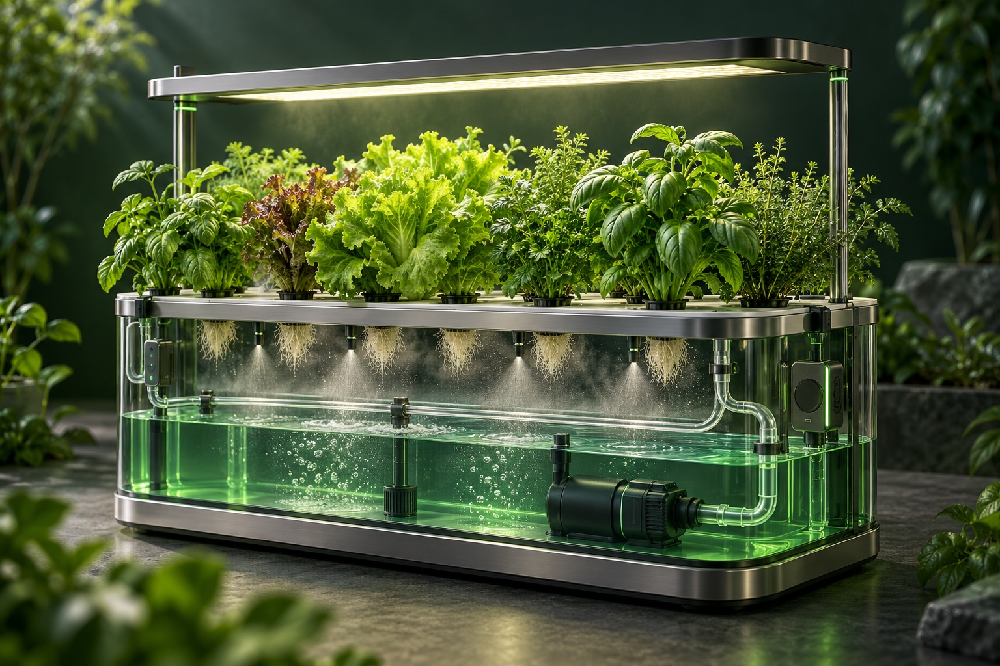

01 / Fundamentals
What is aeroponics? How roots grow without soil
Aeroponics is a soilless growing method in which roots hang in an air-filled chamber and receive water and dissolved nutrients through spray or mist. It changes how the root zone is supplied; it does not remove a plant’s need for light, nutrients, oxygen or careful management.

The roots hang in air, but the plant still needs water
The easiest way to understand aeroponics is to separate the shoot from the root zone. A support holds the stem and crown above a chamber. Most of the roots extend below it, where a delivery system wets them with a nutrient solution. The crop is physically supported even though its root network is not buried in soil.
A nutrient solution is water containing dissolved mineral nutrients. Roots take up that water and those nutrients while the leaves receive light and exchange gases with their surroundings. “Growing in air” describes the root environment, not a way to grow a plant without inputs.
Aeroponics is generally discussed within the wider family of hydroponic, or nutrient-solution-based, cultivation. A 2014 lettuce experiment explicitly describes its dry-fog technique as an aeroponic form of hydroponics. Read the original lettuce study.
A simple view of the working cycle
Imagine a compact growing cabinet with leafy plants in its lid. A reservoir holds the prepared solution. A pump moves liquid through filters and tubing to nozzles. Spray reaches the suspended roots. In a recirculating design, liquid that is not taken up drains back to the reservoir.
The system therefore has two jobs: keep the plant supplied and keep the growing equipment dependable. A timer can request irrigation, but the physical delivery path must actually work. The roots cannot respond to an instruction stored in software; they respond to the environment around them.
- Plant support: holds the crop without compressing or flooding its crown.
- Root chamber: provides room for roots and access for inspection.
- Nutrient reservoir: contains the water and dissolved nutrients.
- Delivery and drainage: pumps, filters, nozzles, tubing and a return path where used.
- Measurement and control: observes conditions and coordinates equipment.
Not every aeroponic system produces the same mist
The word aeroponics covers several delivery arrangements. Mechanical nozzles may operate at different pressures; other designs use ultrasonic atomization. A label such as high-pressure aeroponics describes an engineering choice, not a complete growing recipe.
In a lettuce experiment, nozzle type and spraying interval both affected plant growth and nutrient uptake. The useful lesson is that irrigation settings belong to a particular apparatus and crop. Tunio et al., 2021.
For a new installation, ask how spray is distributed across the chamber, how that distribution changes as roots grow, and how delivery will be checked. An attractive cloud of mist is not itself a measurement of how evenly each plant is being supplied.
Aeroponics, hydroponics and vertical farming describe different things
Hydroponics concerns growing plants with a nutrient solution instead of soil. Deep water culture holds roots in an aerated solution; nutrient film technique passes a shallow flow through a growing channel. Aeroponics supplies much of the suspended root surface through spray.
Vertical farming concerns the arrangement of cultivation space, often in stacked layers. A vertical farm can use aeroponics, another hydroponic technique, or a different growing medium. An aeroponic system can also occupy a single level in a greenhouse. The delivery method and the building layout should be evaluated separately.
A practical application: seed potato production
Aeroponics has a documented role in producing potato minitubers for seed systems. The International Potato Center’s manual explains the method and its operating constraints. This is a specific propagation application; it should not be read as proof that every food crop will achieve the same performance. CIP’s seed potato manual.
That distinction matters when reading a success story. Producing planting material, growing a leafy vegetable for sale, and supplying staple food at large scale are different tasks. Each needs its own evidence, economics and operating plan.
Start with a growing question, then choose the hardware
A useful first question is not “Which system looks most advanced?” It is “What must this crop and this installation do well?” Consider the required output, available space, water supply, maintenance access and acceptable interruption risk.
Leafcoin explores the relationship between growing conditions, irrigation and nutrient calibration, and verifiable crop records. Its public Home Aeroponics materials document historical personal lab work. The wider architecture and ML research loop remain proposed work. Use the concept overview to see that scope, and the comparison guide to examine the alternatives.
Common questions
Do aeroponic plants receive nutrients?
Yes. Water carries dissolved mineral nutrients to the roots through spray or mist. Aeroponics removes soil from the root zone, not the crop’s need for nutrition.
Is aeroponics the same as vertical farming?
No. Aeroponics describes root-zone delivery; vertical farming describes how cultivation space is arranged. A farm can use one, both or neither.
Does aeroponics always use less water than hydroponics?
No universal percentage applies. Compare the actual system, crop, recirculation, cleaning and harvested output. The comparison article explains how to assess that claim.
Sources and scope
These are original research publications or institutional technical guidance. Experimental findings apply to the crop and conditions studied. Suggestions in this guide are an engineering synthesis; they are not presented as measured Leafcoin results.
- A novel aeroponic technique using dry-fog spray fertigation to grow leaf lettuce
Hikosaka, Kanechi and Uno, 2014. Peer-reviewed experiment.
- Influence of Atomization Nozzles and Spraying Intervals on Growth, Biomass Yield, and Nutrient Uptake of Butter-Head Lettuce under Aeroponics System
Tunio et al., 2021. Peer-reviewed experiment.
- Manual on quality seed potato production using aeroponics
Víctor Otazú, International Potato Center, 2010. Institutional technical manual; potato-specific guidance.